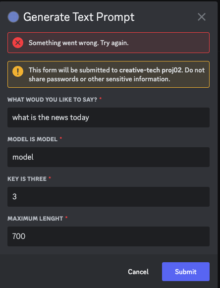

For this project, I tried several methods:
https://github.com/yuliniris/creative-tech-4/tree/main/project02.
File name: chatbotFetchAPI
https://github.com/yuliniris/creative-tech-4/tree/main/project02.
File name: textGeneration, TextGenMarkovify
https://github.com/yuliniris/creative-tech-4/tree/main/project02.
File name: text generation(readscripts)
https://github.com/yuliniris/creative-tech-4/tree/main/project02.
File name: chatbotMarkovTextGen
For the dialogue model, when clicking 'submit', it shows error. But the console of replit platform does not show any error information. I have not figured it out.
I set four kinds of tasks for chatbot:
My bot is triggered by sending text message 'would you like to have a chat?'.
Users can interact with it by two ways:
I use the scripts of Game of Thrones to train the Markov Chain model. I hope it can tell more about the story.
It is limited to use local text file, and I would like to try web scraping to obtain more text files as training data.
Users need to start the conversation by sending text messages, and anything is okay. Chatbot may pick up the last three letters as the start to generate new vocabulary.
Also, users need to tell chatbot the length of paragraph.
Additionally, the calculation unit of three letters can be changed as well. If setting the unit length as four, the model will calculate the probility of the fifth character. Since, in the training part, this parameter is set three, right now it is the three-letter unit.
I use Markov Process to generate text, and apply two methods.
First one is using the existing library called Markovify. Second one is writing the Markov Process step-by-step. The model calculates the probilities table and then using the probilities table to generate new texts.